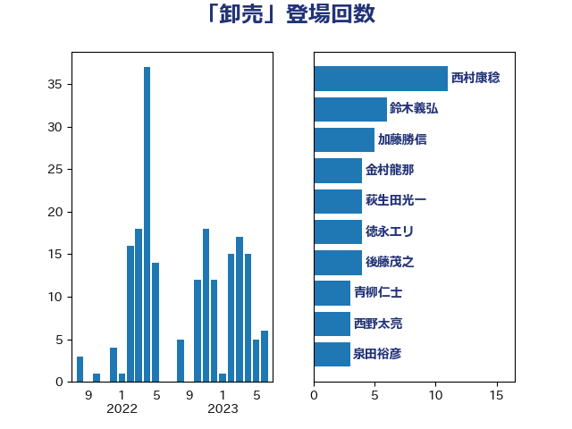

単語「卸売」

| 熊野正士 | 公明党 | 8 回 |
| 野上浩太郎 | 自由民主党 | 6 回 |
| 梶山弘志 | 自由民主党 | 5 回 |
| 西村康稔 | 自由民主党 | 5 回 |
| 後藤茂之 | 自由民主党 | 4 回 |
| 萩生田光一 | 自由民主党 | 4 回 |
| 金村龍那 | 日本維新の会 | 4 回 |
| 田村憲久 | 自由民主党 | 3 回 |
| 落合貴之 | 立憲民主党 | 3 回 |
| 西野太亮 | 自由民主党 | 3 回 |
| 青柳仁士 | 日本維新の会 | 3 回 |
| 下野六太 | 公明党 | 2 回 |
| 北村経夫 | 自由民主党 | 2 回 |
| 山崎誠 | 立憲民主党 | 2 回 |
| 山添拓 | 日本共産党 | 2 回 |
| 江島潔 | 自由民主党 | 2 回 |
| 河野義博 | 公明党 | 2 回 |
| 浅野哲 | 国民民主党 | 2 回 |
| 福山哲郎 | 立憲民主党 | 2 回 |
| 菅直人 | 立憲民主党 | 2 回 |
| 道下大樹 | 立憲民主党 | 2 回 |
| 中野英幸 | 自由民主党 | 1 回 |
| 伊波洋一 | 無所属 | 1 回 |
| 倉林明子 | 日本共産党 | 1 回 |
| 古賀篤 | 自由民主党 | 1 回 |
| 山田俊男 | 自由民主党 | 1 回 |
| 杉久武 | 公明党 | 1 回 |
| 東国幹 | 自由民主党 | 1 回 |
| 松山政司 | 自由民主党 | 1 回 |
| 梅谷守 | 立憲民主党 | 1 回 |
| 横山信一 | 公明党 | 1 回 |
| 武部新 | 自由民主党 | 1 回 |
| 漆間譲司 | 日本維新の会 | 1 回 |
| 田名部匡代 | 立憲民主党 | 1 回 |
| 田村まみ | 国民民主党 | 1 回 |
| 田村貴昭 | 日本共産党 | 1 回 |
| 白石洋一 | 立憲民主党 | 1 回 |
| 石井啓一 | 公明党 | 1 回 |
| 石垣のりこ | 立憲民主党 | 1 回 |
| 石川昭政 | 自由民主党 | 1 回 |
| 紙智子 | 日本共産党 | 1 回 |
| 細田健一 | 自由民主党 | 1 回 |
| 美延映夫 | 日本維新の会 | 1 回 |
| 芳賀道也 | 国民民主党 | 1 回 |
| 菅義偉 | 自由民主党 | 1 回 |
| 金子俊平 | 自由民主党 | 1 回 |
| 長谷川岳 | 自由民主党 | 1 回 |
| 齋藤健 | 自由民主党 | 1 回 |